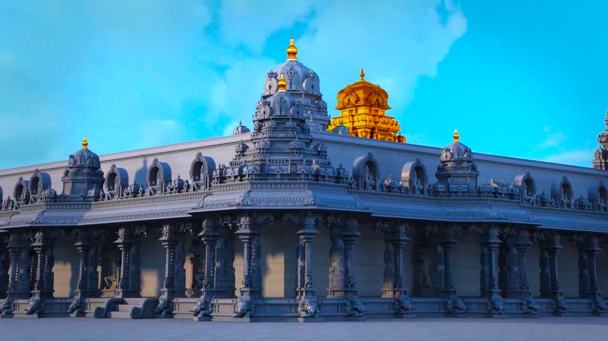

About Yadadri
Sri Lakshminarasimha Swamy Temple or Yadagirigutta is a popular Hindu Temple devoted to Lord Narasimha Swamy, an incarnation of Lord Vishnu. It is situated over a hillock in the Nalgonda district, Telangana at a distance of 6 km from Riagir Railway station, 13 km from Bhongir and around 60 kilometers from the capital city of Hyderabad. Yadagirigutta is a unique and pleasant hillock that enjoys moderate climate in all seasons. The place witnesses a heavy rush of devotees, not less than 5000-8000 pilgrims on average each day for offering their vows, performing pujas, kalyanam, abhisekam etc. while the crowd grows substantially during weekends, holidays and festivals.